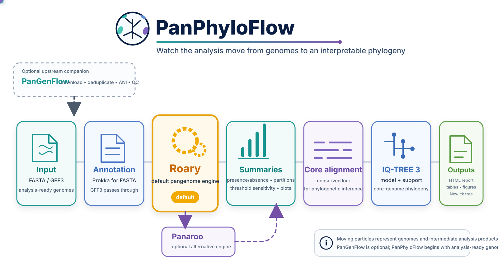

Learn microbial pangenomics with PanPhyloFlow
PanPhyloFlow is both a workflow and a learning path. It uses Roary as the default pangenome engine, with Panaroo available as an alternative, and connects pangenome reconstruction to core-genome phylogeny and interpretable reporting.

What you will learn
PanPhyloFlow is designed to make the analysis decisions visible rather than treating pangenome reconstruction as a black box. The documentation focuses on four recurring questions:
- What is biological variation and what is analysis-defined?
- How do annotation, clustering and prevalence thresholds affect the pangenome?
- How is the core alignment converted into a phylogeny?
- Which conclusions are safe, and which require additional validation?
Learning path
- The biological question
- Inputs and annotation
- Building the pangenome
- Core versus accessory is a definition
- From core genes to a phylogeny
- Reading the output without overclaiming
- Running the complete workflow
- How the Nextflow workflow is constructed
- Scaling and current limits
- Validation strategy
Mental model
A microbial pangenome is not merely the union of genes in a set of genomes. The observed pangenome depends on the sampled population, genome quality, annotation, homology/orthology inference, clustering parameters and the prevalence thresholds used to define categories.
PanPhyloFlow exposes those decisions so that learners can distinguish biological observations from analysis-defined summaries.
Input genomes
PanPhyloFlow starts with analysis-ready FASTA genomes or compatible GFF3 annotations. If genome acquisition, deduplication, ANI validation or upstream QC is still required, the separate PanGenFlow repository can be used optionally before PanPhyloFlow.